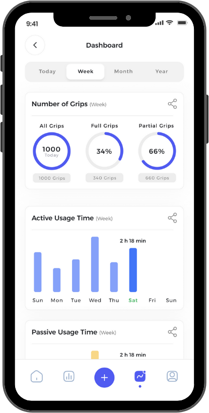
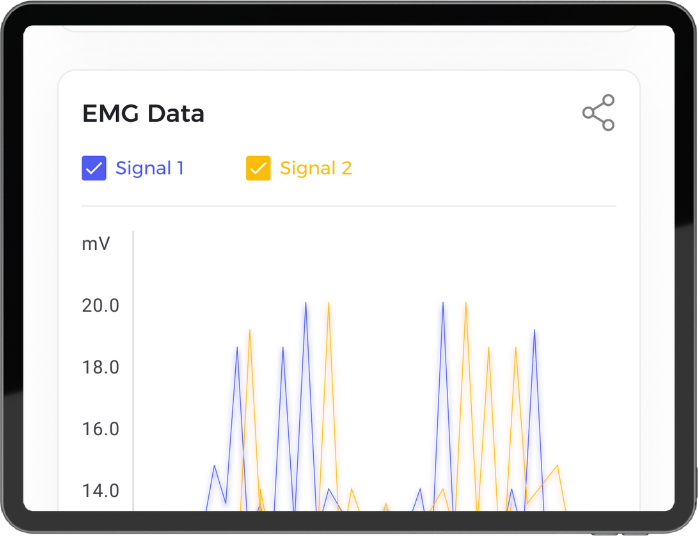
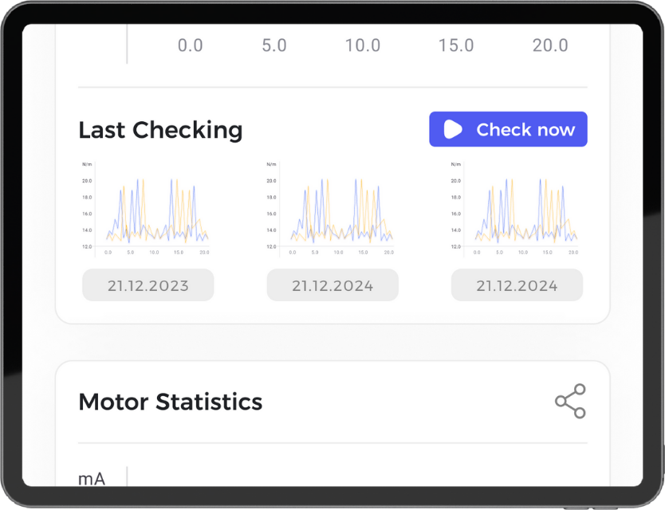
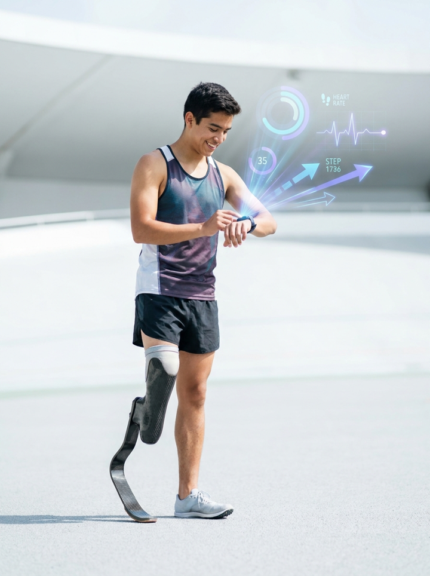
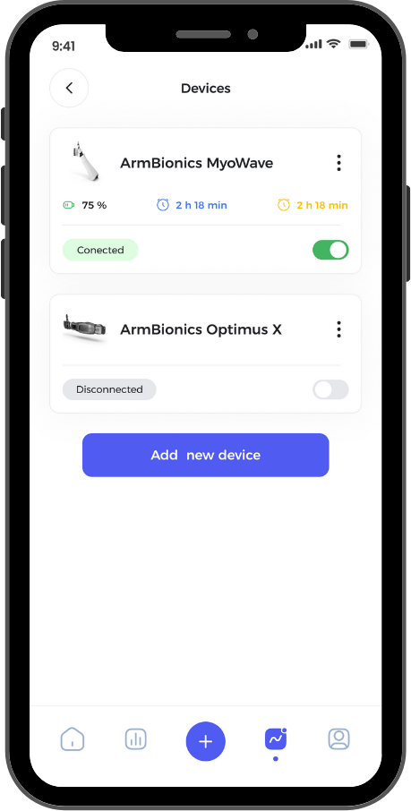
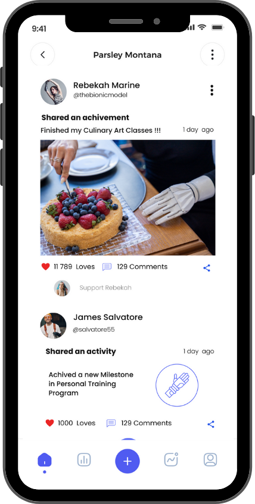
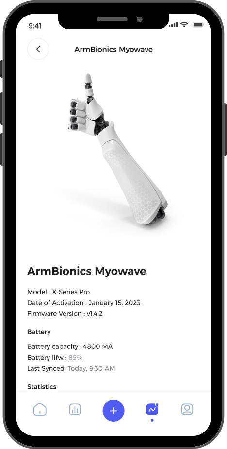

Connectra turns the data a device already produces into ground truth. Progress your users can see, and a live signal the clinics, organizations, and manufacturers who serve them can finally act on.
Already piloting with industry leaders in rehabilitation and O&P care.

Connectra connects every device, patient, clinic, and manufacturer into one continuous loop, so progress is seen and the 60 to 80% of devices that used to be abandoned get caught early. The device, finally in the loop.
Connectra puts the device in the loop. The data a device already produces becomes ground truth: for the user, to track progress, and for the care team, to finally see what happens after the clinic door.
Goals, milestones, and real-world device use, week by week. Progress you can see.
Connectra Intelligence turns raw device data into clear, plain-language guidance, so every week of use becomes a step forward.
Your care team sees how it's actually going between visits and steps in early. Your community shows you what thriving looks like.
1.2 million moments per device, every day, turned into progress users can see and a signal care teams can finally act on. This is the ground truth nobody has had.


One platform. Four people it serves, each seeing the part that matters to them.

Track real-world device use week by week, hit milestones, and find people who have been where you are. Adapt, don't abandon. You're not defined by your device, you're defined by your drive.
See the app →
A live view of real-world device use across every brand. Spot a struggling patient early and intervene before they give up. The same remote monitoring is reimbursable, so follow-up that used to be unpaid supports your margins while outcomes improve.
Worth 15 minutes? →
Connectra gives your community a place to track progress, stay connected to their care team, and see others thriving with their devices. We partner with organizations to bring it to members, with the engagement staying close to your channels.
Explore a partnership →
Your device ships, but the data shouldn't stop. 1.2 million moments a day, turned into insight your product, clinical, and commercial teams can act on, including the abandonment signals you can't see today. We work across every brand.
See the data →The hardware problem is mostly solved. The system around it is not.
Marina Davtyan, MD started her first prosthetics company at 19. She built Connectra after years of watching the same story repeat: a great fitting, a hopeful patient, and then silence, until the device turned up abandoned.
This layer is coming to every assistive device. The only question is who builds it.
We're already piloting with industry leaders in rehabilitation and O&P care.
Connecting all the dots, together.